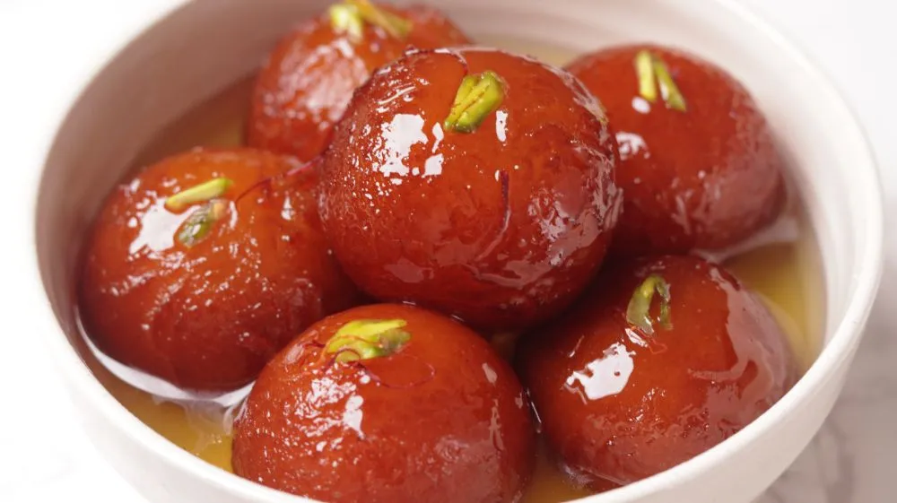

Gulab jamun
Ingredient
- Sugar
- Flour
- oil
Recipe
- Boil sugar and water to prepare syrup remove from fire. Add cardamom and keep aside to cool.
- In a mixing bowl put the flour, paneer, sooji, Nestlé MILKMAID, baking powder and baking soda. Mix gently to make a soft dough. Do not knead too much.
- Divide the mixture into 30-35 portions and gently roll into round gulab jamuns. Fry in the oil at very low flame till golden brown in color.
- Keep putting the fried gulab jamuns in the prepared sugar syrup. Once all the gulab jamuns are in the sugar syrup bring it to a boil and remove from flame.
- Serve warm.

Barfi
Ingredient
- Sugar
- dry fruits
- condensed milk
Recipe
- Heat 2 tablespoons of ghee in a non-stick pan. Add 1 cup desiccated coconut and roast until light golden brown.
- Pour in 1 cup condensed milk and add 1/2 cup sugar. Mix well and cook over medium heat, stirring continuously, until the mixture thickens and leaves the sides of the pan (about 10-15 minutes).
- Optionally, add a pinch of cardamom powder for flavor. Mix it in.
- Turn off the heat and transfer the mixture to a greased tray or plate. Flatten it using a spatula.
- Allow the coconut barfi to cool for a few hours until set. Once set, cut into desired shapes. Enjoy your homemade coconut barfi!